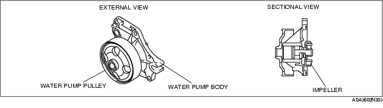

• The water pump pulley, made of steel, and the water pump body, made of aluminum alloy, are integrated, and the impeller is built into the cylinder block for weight reduction.
• The water pump is driven by the front drive belt (serpentine type).
